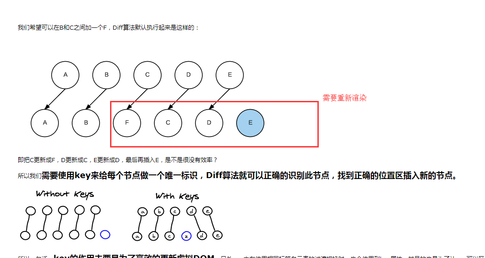

作者 | 沉静地闪光
来源 | https://segmentfault.com/a/1190000016344599
看看面试题，只是为了查漏补缺，看看自己那些方面还不懂。切记不要以为背了面试题，就万事大吉了，最好是理解背后的原理，这样面试的时候才能侃侃而谈。不然，稍微有水平的面试官一看就能看出，是否有真才实学还是刚好背中了这道面试题（有空再把例子中代码补上）。
一、对于MVVM的理解？
MVVM 是 Model-View-ViewModel 的缩写。
Model代表数据模型，也可以在Model中定义数据修改和操作的业务逻辑。
View代表UI 组件，它负责将数据模型转化成UI 展现出来。
ViewModel监听模型数据的改变和控制视图行为、处理用户交互，简单理解就是一个同步View 和 Model的对象，连接Model和View。
在MVVM架构下，View 和 Model 之间并没有直接的联系，而是通过ViewModel进行交互，Model 和 ViewModel 之间的交互是双向的， 因此View 数据的变化会同步到Model中，而Model 数据的变化也会立即反应到View 上。
ViewModel 通过双向数据绑定把 View 层和 Model 层连接了起来，而View 和 Model 之间的同步工作完全是自动的，无需人为干涉，因此开发者只需关注业务逻辑，不需要手动操作DOM，不需要关注数据状态的同步问题，复杂的数据状态维护完全由 MVVM 来统一管理。
二、Vue的生命周期
beforeCreate（创建前），在数据观测和初始化事件还未开始
created（创建后），完成数据观测，属性和方法的运算，初始化事件， $el 属性还没有显示出来
beforeMount（载入前），在挂载开始之前被调用，相关的render函数首次被调用。实例已完成以下的配置：编译模板，把data里面的数据和模板生成html。注意此时还没有挂载html到页面上。
mounted（载入后），在el 被新创建的 vm.$el 替换，并挂载到实例上去之后调用。实例已完成以下的配置：用上面编译好的html内容替换el属性指向的DOM对象。完成模板中的html渲染到html页面中。此过程中进行ajax交互。
beforeUpdate（更新前），在数据更新之前调用，发生在虚拟DOM重新渲染和打补丁之前。可以在该钩子中进一步地更改状态，不会触发附加的重渲染过程。
updated（更新后），在由于数据更改导致的虚拟DOM重新渲染和打补丁之后调用。调用时，组件DOM已经更新，所以可以执行依赖于DOM的操作。然而在大多数情况下，应该避免在此期间更改状态，因为这可能会导致更新无限循环。该钩子在服务器端渲染期间不被调用。
activated:被 keep-alive 缓存的组件停用时调用。
deactivated:被 keep-alive 缓存的组件停用时调用。
beforeDestroy（销毁前），在实例销毁之前调用。实例仍然完全可用。
destroyed（销毁后），在实例销毁之后调用。调用后，所有的事件监听器会被移除，所有的子实例也会被销毁。该钩子在服务器端渲染期间不被调用。
errorCaptured(子孙组件报错时调用) 当捕获一个来自子孙组件的错误时被调用。
1、什么是vue生命周期？
答： Vue 实例从创建到销毁的过程，就是生命周期。从开始创建、初始化数据、编译模板、挂载Dom→渲染、更新→渲染、销毁等一系列过程，称之为 Vue 的生命周期。
2、vue生命周期的作用是什么？
答：它的生命周期中有多个事件钩子，让我们在控制整个Vue实例的过程时更容易形成好的逻辑。
3、vue生命周期总共有几个阶段？
答：它可以总共分为8个阶段：创建前/后、载入前/后、更新前/后、销毁前/销毁后。
4、第一次页面加载会触发哪几个钩子？
答：会触发下面这几个beforeCreate、created、beforeMount、mounted 。
5、DOM 渲染在哪个周期中就已经完成？
答：DOM 渲染在 mounted 中就已经完成了。
三、 Vue实现数据双向绑定的原理：Object.defineProperty()
vue实现数据双向绑定主要是：采用数据劫持结合发布者-订阅者模式的方式，通过 Object.defineProperty() 来劫持各个属性的setter，getter，在数据变动时发布消息给订阅者，触发相应监听回调，来实现数据的双向绑定。当把一个普通 Javascript 对象传给 Vue 实例来作为它的 data 选项时，Vue 将遍历它的属性，用 Object.defineProperty() 将它们转为 getter/setter。用户看不到 getter/setter，但是在内部它们让 Vue 追踪依赖，在属性被访问和修改时通知变化。
vue的数据双向绑定 将MVVM作为数据绑定的入口，整合Observer，Compile和Watcher三者，通过Observer来监听自己的model的数据变化，通过Compile来解析编译模板指令（vue中是用来解析 {{}}），最终利用watcher搭起observer和Compile之间的通信桥梁，达到数据变化 —>视图更新；视图交互变化（input）—>数据model变更双向绑定效果。
js实现简单的双向绑定：
<div>
<div id="app">
<input type="text" id="txt">
<p id="show"></p>
</div>
</div>
<script type="text/javascript">
var obj = {}
Object.defineProperty(obj, 'txt', {
get: function () {
return obj
},
set: function (newValue) {
document.getElementById('txt').value = newValue
document.getElementById('show').innerHTML = newValue
}
})
document.addEventListener('keyup', function (e) {
obj.txt = e.target.value
})
</script>
四、Vue组件间的参数传递
1、父组件与子组件传值
父组件传给子组件：子组件通过props方法接受数据；
子组件传给父组件： $emit 方法传递参数
2、非父子组件间的数据传递，兄弟组件传值
eventBus，就是创建一个事件中心，相当于中转站，可以用它来传递事件和接收事件。项目比较小时，用这个比较合适（虽然也有不少人推荐直接用VUEX，具体来说看需求咯。技术只是手段，目的达到才是王道）。
五、Vue的路由实现：hash模式 和 history模式
hash模式：在浏览器中符号“#”，#以及#后面的字符称之为hash，用 window.location.hash 读取。特点：hash虽然在URL中，但不被包括在HTTP请求中；用来指导浏览器动作，对服务端安全无用，hash不会重加载页面。
history模式：history采用HTML5的新特性；且提供了两个新方法： pushState()， replaceState()可以对浏览器历史记录栈进行修改，以及popState事件的监听到状态变更。
六、Vue与Angular以及React的区别？
版本在不断更新，以下的区别有可能不是很正确。我工作中只用到vue，对angular和react不怎么熟。
1、与AngularJS的区别
相同点：都支持指令：内置指令和自定义指令；都支持过滤器：内置过滤器和自定义过滤器；都支持双向数据绑定；都不支持低端浏览器。
不同点：AngularJS的学习成本高，比如增加了Dependency Injection特性，而Vue.js本身提供的API都比较简单、直观；在性能上，AngularJS依赖对数据做脏检查，所以Watcher越多越慢；Vue.js使用基于依赖追踪的观察并且使用异步队列更新，所有的数据都是独立触发的。
2、与React的区别
相同点：React采用特殊的JSX语法，Vue.js在组件开发中也推崇编写.vue特殊文件格式，对文件内容都有一些约定，两者都需要编译后使用；中心思想相同：一切都是组件，组件实例之间可以嵌套；都提供合理的钩子函数，可以让开发者定制化地去处理需求；都不内置列数AJAX，Route等功能到核心包，而是以插件的方式加载；在组件开发中都支持mixins的特性。
不同点：React采用的Virtual DOM会对渲染出来的结果做脏检查；Vue.js在模板中提供了指令，过滤器等，可以非常方便，快捷地操作Virtual DOM。
七、vue路由的钩子函数
首页可以控制导航跳转，beforeEach，afterEach等，一般用于页面title的修改。一些需要登录才能调整页面的重定向功能。
beforeEach主要有3个参数to，from，next。
to：route即将进入的目标路由对象。
from：route当前导航正要离开的路由。
next：function一定要调用该方法resolve这个钩子。执行效果依赖next方法的调用参数。可以控制网页的跳转。
八、vuex是什么？怎么使用？哪种功能场景使用它？
只用来读取的状态集中放在store中； 改变状态的方式是提交mutations，这是个同步的事物； 异步逻辑应该封装在action中。
在main.js引入store，注入。新建了一个目录store，… export 。
场景有：单页应用中，组件之间的状态、音乐播放、登录状态、加入购物车

state：Vuex 使用单一状态树,即每个应用将仅仅包含一个store 实例，但单一状态树和模块化并不冲突。存放的数据状态，不可以直接修改里面的数据。
mutations：mutations定义的方法动态修改Vuex 的 store 中的状态或数据。
getters：类似vue的计算属性，主要用来过滤一些数据。
action：actions可以理解为通过将mutations里面处里数据的方法变成可异步的处理数据的方法，简单的说就是异步操作数据。view 层通过 store.dispath 来分发 action。
const store = new Vuex.Store({ //store实例
state: {
count: 0
},
mutations: {
increment (state) {
state.count++
}
},
actions: {
increment (context) {
context.commit('increment')
}
}
})
modules：项目特别复杂的时候，可以让每一个模块拥有自己的state、mutation、action、getters，使得结构非常清晰，方便管理。
const moduleA = {
state: { ... },
mutations: { ... },
actions: { ... },
getters: { ... }
}
const moduleB = {
state: { ... },
mutations: { ... },
actions: { ... }
}
const store = new Vuex.Store({
modules: {
a: moduleA,
b: moduleB
})
九、其它小知识点
1、css只在当前组件起作用
答：在style标签中写入scoped即可 例如： <stylescoped></style>
2、v-if 和 v-show 区别
答：v-if按照条件是否渲染，v-show是display的block或none；
3、$route和$router的区别
答：$route是“路由信息对象”，包括path，params，hash，query，fullPath，matched，name等路由信息参数。而$router是“路由实例”对象包括了路由的跳转方法，钩子函数等。
PS：缺少的案例代码，这几天再补上去。有些地方可能描述的不够清楚，如果有歧义，可能是我理解错了。
本文完~
- 你知道vue中key的原理吗？说说你对它的理解
- vue和react的虚拟DOM的Diff算法大致相同
- 通过diff算法
1. 两个相同的组件产生类似的DOM结构，不同的组件产生不同的DOM结构。
2. 同一层级的一组节点，他们可以通过唯一的id进行区分。
1.为了避免表单在渲染时绑定相同的值
2.在插入节点时避免渲染过多的节点
